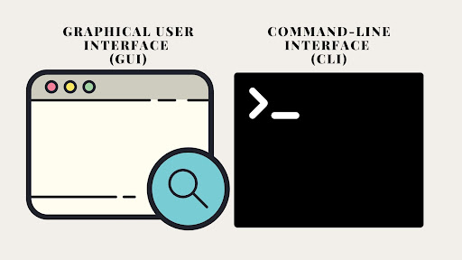
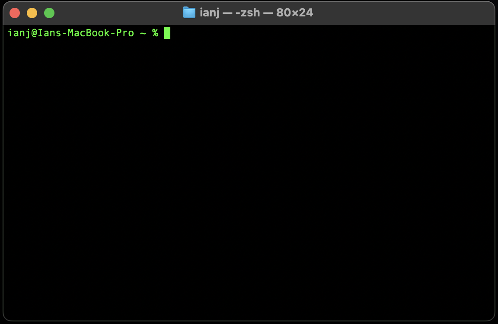
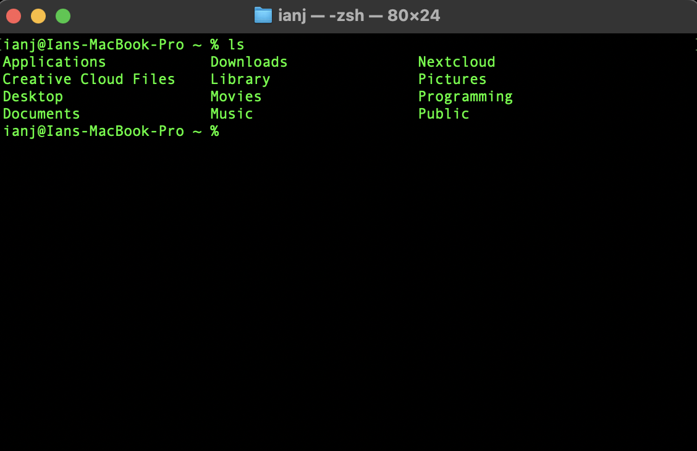
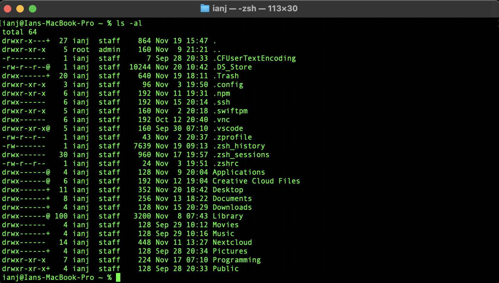

In this article we'll be covering:
The command line interface (CLI) is an integral program running on nearly every computer you encounter. Unlike the familiar graphical user interfaces(GUIs) you might be used to - think of your desktop or the web browser you're using now - the CLI offers a more direct way to interact with your computer's inner workings.

At first glance, the CLI can seem daunting, presenting itself as a stark, text-based environment.
However, this apparent complexity masks it underlying simplicity and power.
At it's core, every process on your computer boils down to a series of text commands, which are then translated into actions the computer understands.
While GUIs provide an intuitive way to perform daily tasks, they have their limitations.
In constrast, the CLI allows for more nuanced and direct control, offering a level of depth that GUIs often cannot match.
No matter if you're using Windows, Mac, or Linux the CLI is readily accessible.
It's a universal tool that unlocks a new dimension of computer interaction, on that may initially seem arcane but is incredibly powerful once you become familiar with it's syntax and capabilities.
The command line interface has many uses, we'll delve into some of the more common ones here today.
If you're still curious after this post you can do some research on some of the topics we don't cover and check out the provided resources!
Here's a non comprehensive list of some of the common uses for the command line interface:
Creating, deleting, moving, and renaming files and directories
Managing user accounts, setting permissions, and monitoring system resources.
Checking network configurations, managing connections, and troubleshooting network issues.
Installing, updating, and removing software packages
Writing and executing scripts to automate tasks.
Manipulating and analyzing data files, such as text processing or batch renaming.
Using SSH (Secure Shell) for secure remote access to other systems.
Managing code versions and collaborating on software development using tools like Git.
Now that we've covered the basics lets dive into common command line interface commands! now for this section you may want to follow along. To do so, please navigate to the command line interface on your computer. If you're working on a Mac or Linux machine your command line interface will be accessible through a program called "Terminal" if you're working on a Windows machine the program will be called "Powershell". Once opened you should see a screen like this one:
The format you see in my personal terminal is
[root@host ~]%
So let's practice a little bit, the first command we'll try is ls which stands for list contents. This command will list out the contents of a directory or you might also know it as a folder! So let's give it a try type ls into your terminal or powershell window you should see something like this:
So from the image above I see that in my home directory for my user (in this case me ianj) I have bunch of sub directories, applications, downloads, my desktop folder, etc. Now I will mention that most commands have a structure, that looks something like:
command [OPTIONS] arguments
The [OPTIONS] tag will usually accept a flag, for example if I type in ls -al we'll see a different output that might look like this:
Now you should notice from this image that there are some files and directories that weren't there before. This is because the -a flag and the -l flag have altered the output of the ls command. -a lists all files and sub-directories in the current directory even the hidden ones, and the -l flag shows a detailed list of information that relates to the file or directory take for example the line:
drwxr-xr-x 7 ianj staff 224 Nov 17 07:10 Programming
This line shows a few things the first letter "d" tells us that this is a directory, the next 3 letters "rwx" tell us that the root user
has read, write and execute privelages, the next 3 "r-x" tell us only members of the group the directory belongs to can read and execute but not write.
and finally the last 3 "r-x" tell us that anyone can read or execute but not write.
Next, the 7 denotes how many hard links the directory has.
Following that, we have the owner of the directory, and then the group the directory belongs to.
Next comes the size of the file in bytes, and then the date the directory was last modified. Finally the name of the directory.
This format will be the same for a file except a file will be denoted with a "-" to begin with.